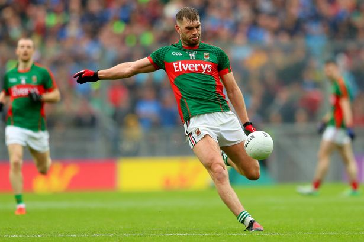
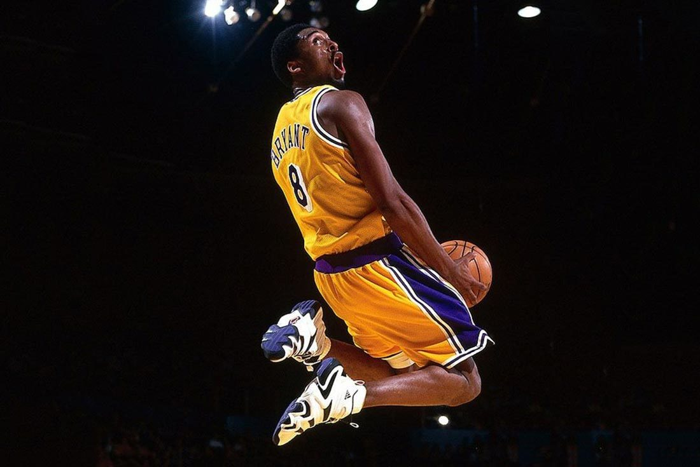

|  |  |
| Football | Basketball |
|---|---|
| I play football with my local club Eire Og. We are the current holders of the Minor Premier 1 | I play basketball for Ballincollig BC. We recently won our second National Cup in as many |
| County Championship as well as reigning League champions. Eire Og is a combination of 2 | years with our National League team. We hope to go up to the highest grade, Superleague, |
| small parishes, Ovens and Farran. Our adult team are playing in the Premier Intermediate | next year. I was lucky enough to play for Ireland in the Europeans at 16 and 18, and I was |
| grade. I am fortunate enough to be playing with Cork in football for the last few years and | captain during our U16 campaign. I have a total of 21 caps for Ireland currently, and I will |
| I take huge pride in this, as my father previously played for Kerry. I will be palying with | be focusing on football and my studies for the forseeable future. My mother also represented |
| the U20s for the next 2 years and hopefully play senior after. My brother also plays for Cork. | Ireland in basketball. I won 2 National Cups and 2 All-Irelands at U19 with my school. |